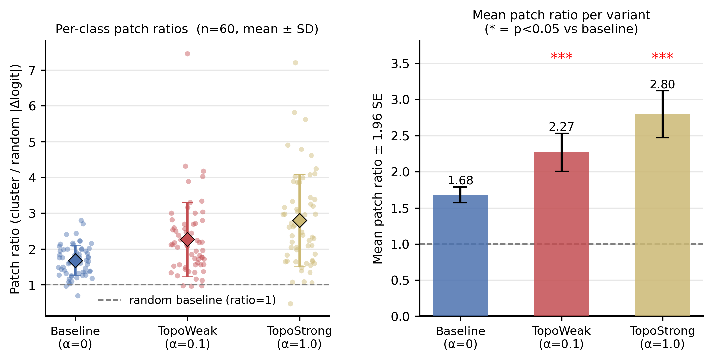
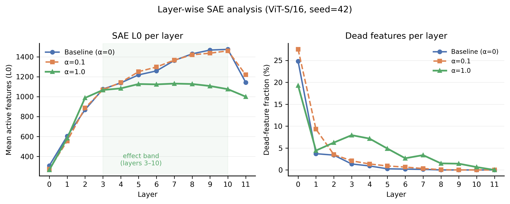

Topographic Training Concentrates Causal Circuits Without Improving Neuron Monosemanticity
IvLabs, VNIT Nagpur, India · *Equal contribution
Mechanistic Interpretability Workshop @ ICML 2026, Seoul
TL;DR: A sub-0.1k-parameter training-time penalty (TopoLoss) concentrates a vision transformer's causal circuits into tight spatial clusters — 2.79× more causally sufficient than random neuron sets — yet leaves individual neurons no more monosemantic. Interpretability gains here are a property of circuits, not neurons.
Abstract
Mechanistic interpretability of vision transformers seeks to decompose model computation into human-readable units, but learned representations entangle many concepts in each neuron. Feature superposition is widely treated as the central obstacle to this decomposition, yet most mitigations (sparse autoencoders, dictionary learning) are post-hoc and leave the underlying network unchanged. We ask whether a spatial-locality training loss (TopoLoss) can act as a lightweight, training-time prior that improves interpretability of standard mech-interp tools. Training ViT on ImageNet-100 across multiple TopoLoss weights α, we measure causal sufficiency of topographic clusters via activation patching and feature geometry via sparse autoencoders fit to the same residual stream. At α = 1.0, topographic clusters are 2.79× more causally sufficient than random unit sets of the same size, with the effect increasing monotonically in α. SAE L0 sparsity decreases by 11% and dead-feature fraction rises 19-fold, yet standard neuron-level monosemanticity scores are unchanged, indicating that topographic pressure acts at circuit level, concentrating causal mass into spatially local structures without disentangling individual neurons. This dissociation suggests current neuron-level monosemanticity metrics are insensitive to a class of real interpretability gains, and positions cheap architectural priors as a viable training-time complement to post-hoc tooling.
Method: TopoLoss
TopoLoss adds a weight-smoothness penalty between units that are adjacent
on a fixed 2D topographic grid, pushing functionally similar units to co-locate —
echoing cortical maps in biological vision. Applied to the attention-projection
weights (attn.proj) of all 12 ViT-S/16 blocks; units are arranged
on a $\sqrt{d} \times \sqrt{d}$ grid matching the head dimension.
α
controls pressure strength: it adds fewer than 0.1k parameters and costs
about 1.6 pp accuracy at the strongest setting (α = 1.0).
Setup: ViT-S/16 trained on ImageNet-100, α ∈ {0.0, 0.1, 1.0}, three seeds {42, 123, 456}. A 4-layer TinyViT (d = 128) serves as a preliminary scale probe.
Figure 1 — Overview panels (TopoLoss schematic · H2 SAE sparsity · H3 causal purity).
Drop in the composite Fig 1 PNG here (see website/asset-manifest.md Task 6).
Three Interpretability Axes
We audit TopoLoss on three independent questions about what changes when you impose topographic structure at training time.
Monosemanticity
Do individual neurons become more class-selective?
Metric: entropy-based selectivity Mᵤ
NULLSuperposition
Does SAE-measured feature complexity decrease?
Metric: SAE L0 norm + dead-feature fraction
SUPPORTED *Causal Purity
Are topographic clusters more causally sufficient than random sets?
Metric: activation-patching logit-delta ratio
SUPPORTEDH3 — Causal circuits concentrate
SUPPORTEDTopographic clusters carry disproportionate causal weight. At α = 1.0, topographic clusters reach a patching ratio of 2.79 ± 1.24 vs 1.68 ± 0.42 at baseline — a 66% increase. The effect is monotone in α and robust across all three seeds independently (per-seed ratios: 2.53, 2.89, 2.97). Multi-class expansion (n = 60): p < 0.0001, d = 0.95.

Spatial coherence: The top-k = 16 class units at α = 1.0 are 6.1% more spatially concentrated than baseline (mean grid distance 9.948 vs 10.599; p = 0.0005, d = 0.66), confirming the selected units genuinely co-localise on the topographic sheet.
H2 — Superposition drops
SUPPORTED *At α = 1.0, SAE L0 decreases 11% (1133.8 vs 1273.9; p = 0.007, d = 7.06), and dead-feature fraction rises 19-fold (3.8% vs 0.2%). The L0 reduction is distributed across depth (layers 3–10, peak at layer 10). The α = 0.1 model shows neither effect reliably, confirming a threshold.

H1 — Neurons don’t change
NULLEntropy-based selectivity Mᵤ is flat across α: 0.234 ± 0.002 (α = 0) vs 0.236 ± 0.002 (α = 1.0); Δ = 0.0019, not significant. The SAE-feature-level Mᵤ is also null, including at a larger 25k-image evaluation.
Interpretation: Monosemanticity measures how one neuron spreads across classes — a marginal statistic insensitive to the joint arrangement of many neurons. TopoLoss reorganises neurons into functionally coherent spatial clusters (H3) without changing per-neuron selectivity (H1). Consistent with the superposition hypothesis: spatial co-location, not per-neuron selectivity, is the relevant unit of circuit purity.
Takeaway
A penalty of fewer than 0.1k parameters, added to the training loss, systematically shifts circuit geometry in a way existing tools can measure (d = 0.95 for H3) — at a modest cost (~1.6 pp accuracy at α = 1.0) and without disentangling individual neurons. This positions cheap architectural priors as a viable training-time complement to post-hoc tooling like SAEs, and suggests current neuron-level monosemanticity metrics are blind to a class of real interpretability gains.
Scale caveat: In a 4-layer TinyViT the H2 trend replicates (L0 −2.1% at α = 1.0) but H3 saturates at just 1.42×, far below the ViT-S result of 2.79× — consistent with a depth/scale requirement for circuit formation. Limitations: single dataset (ImageNet-100), partial accuracy confound on H2, single seed for TinyViT.
Video Walkthrough
Citation
@inproceedings{ranka2026topographic,
title = {Topographic Training Concentrates Causal Circuits
Without Improving Neuron Monosemanticity},
author = {Ranka, Gautam and Pandere, Shubham and D'souza, Aiden Ross},
booktitle = {Mechanistic Interpretability Workshop at the 43rd
International Conference on Machine Learning (ICML)},
year = {2026}
}